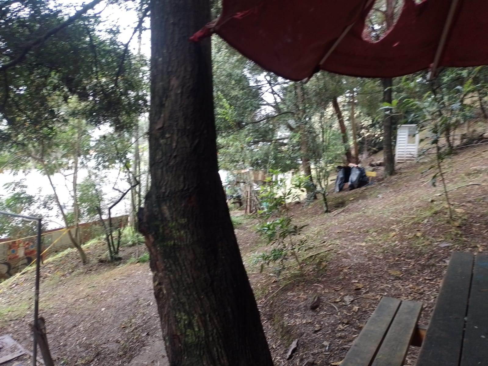

Catalogo de macrohongos de la macarena y Vivero de la Universidad Distrital Francisco Jose de Caldas
El bosque de la macarena y vivero de la universidad distrital francisco jose de caldas es un area verde representativa de las sedes respectivas, donde se pueden encontrar una variedad de especies de macrohongos. Este catalogo tiene como objetivo documentar y dar a conocer las diferentes especies de hongos que habitan en esta región, proporcionando información sobre su taxonomía, características morfológicas y fotografías representativas.

fotografia tomada por Estiben Pinzón
Bosque de la Macarena
El bosque de la Macarena o simplemente el bosque es una zona verde que fue tomada como area verde en la universidad distrital francisco jose de caldas, donde se pueden encontrar una variedad de especies de arboles y arbustos ademas de cultivos, dentro de las especies de arboles mas representativas se encuentra Quercus humboldtii y el sauco, especificamente esta zona verde en funga (Macrohongos) va a estar caracterizada por especies micorrízicas.
Bosque de vivero
El bosque de vivero es una zona verde que fue tomada como area verde en la universidad distrital francisco jose de caldas, donde se pueden encontrar una variedad de especies de arboles y arbustos ademas de cultivos, dentro de las especies de arboles mas representativas se encuentra Quercus humboldtii y el sauco, especificamente esta zona verde en funga (Macrohongos) va a estar caracterizada por especies micorrízicas.
